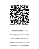

Print at 100% / Actual size. Do not select Fit to page. Verify the black QR square is 40 mm wide before first use. Incorrect print scale makes every estimate incorrect.
Place the marker flat beside the surface being measured, at the same depth. For closer-body measurements, a marker against the door behind the closer is insufficient. Keep the marker and component in the same photograph.

Dimensions are estimates. Products sharing a mounting pattern remain possible matches.